<ion-view>
  <ion-nav-title class="header_title icon-left ion-mic-a" >
        VOICE MESSAGE
  </ion-nav-title>
  <ion-nav-buttons side="right">
    <a class="button button-clear" ui-sref="app.voice_log">
      LOG
    </a>
  </ion-nav-buttons>

  <ion-content>
    <div class="controller_area">

      <div class ="topbuttons">
        <button class="button startstoprecord" on-hold="start_record()" on-release="stop_record()">
          
        </button>
      </div>

      <div class="bottombuttons">
        <button class="button previousbutton" ng-click="">
          <div class="control-buttons">
            
          </div>
        </button>
        <button class="button playpausebutton" ng-click="play()">
          <div class="control-buttons">
            
          </div>
        </button>
        <button class="button nextbutton" ng-click="stop()">
          <div class="control-buttons">
            
          </div>
        </button>
      </div>
    </div>
  </ion-content>
</ion-view>
